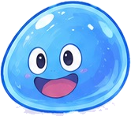

どの組で あそぶ？
あいて
小学生のうちに 知っておきたい ことわざ 50こが入っています。1回の勝負は 20まい。たたみの上には 8まいずつ ならびます。
読み札は 1文字ずつ 出てきます。赤い字は「決まり字」。そこまで 読まれたら、どの札か わかる字です。
まちがえて ちがう札に さわると「おてつき」で、すこしの間 さわれません。
モンスターに とられたものは「にがて」として のこります。きろくは この端末の中だけです。
のこり 20
0
モンスターが ねらっている…
0

よみふだ（ことわざの前半）